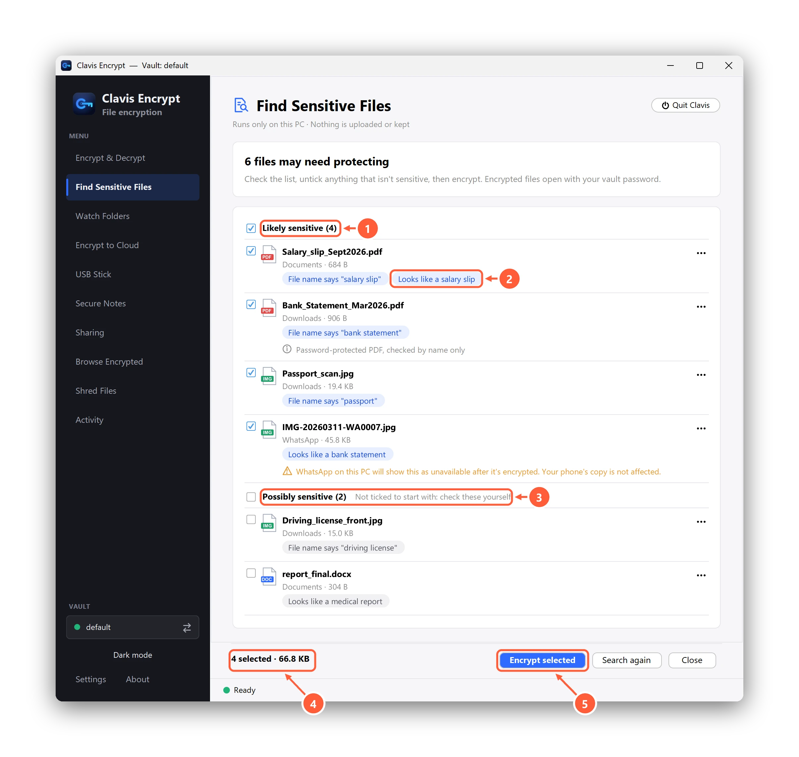

Find sensitive files on your PC
Find Sensitive Files in the sidebar helps you find documents you may have forgotten about: scans and photos of passports and ID cards, bank statements, cheques, payslips and tax forms. You check the list and encrypt the ones you want, in one go. It's part of Clavis Pro, with no limit on the number of files. Encrypting files yourself stays free.
Search
- Open Find Sensitive Files in the sidebar, or press Find sensitive files… on the Encrypt & Decrypt page.
- Under Where to look, keep the folders you want: Documents, Downloads, Desktop, Pictures and, if WhatsApp Desktop is installed, the files received in WhatsApp. Add a folder… adds any other folder.
- Under What to read, leave Read text inside pictures and PDFs on to find scans and photos of documents (slower). Photos in Pictures are checked by name only, unless you tick Also read every photo in Pictures.
- Press Start search. Files appear as they're found, and you can switch to another page while it runs: the status bar shows the search, and Show brings you back. Stop keeps what was found so far.
What Clavis reads
- File names, such as
passport.jpg,bank statement.pdforpayslip_march.pdf. - Text inside documents: Word (.docx), Excel (.xlsx), .txt and .csv files.
- Text in pictures and PDFs (Windows only), using the text recognition built into Windows. Only the first page of a PDF is read. Password-protected PDFs aren't opened; they're checked by name.
Clavis skips system and program folders, AppData (except WhatsApp's folder), hidden folders such as .git, and files you've
already encrypted. Files that OneDrive keeps online only are checked by name, so nothing is downloaded. On Linux, Clavis checks file names
and documents only.
What it recognises
- By file name: words such as passport, ID card, driver's license, bank statement, statement, payslip, pay stub, tax return, W-2, P60, Social Security, National Insurance, cheque, birth certificate and medical report; German and French names such as Reisepass, Personalausweis, Kontoauszug, Lohnsteuerbescheinigung, passeport, carte d'identité, relevé de compte and avis d'imposition; and India's Aadhaar and PAN (also in Hindi and Tamil).
- By what's inside: ID, bank and tax documents from many countries, for example:
- passports and ID cards from any country, by the machine-readable lines at the bottom (the ones full of
<); - ID and tax numbers: a US Social Security number, a UK National Insurance number, a French social security number (NIR), a German tax ID (Steuer-ID), and India's Aadhaar (including masked copies) and PAN, plus Indian voter ID and driving licence cards;
- bank statements in English, French and German, including ones that show an IBAN (an IBAN on its own, as on an invoice, is listed as possibly sensitive);
- payslips (such as "Payslip", "Pay stub" or "Earnings statement" with net or gross pay, "Gehaltsabrechnung" or "Bulletin de paie");
- tax forms such as the US W-2, 1099 and 1040, the UK P60 and P45, the German Lohnsteuerbescheinigung, the French avis d'impôt, and India's Form 16, Form 26AS and ITR-V.
- passports and ID cards from any country, by the machine-readable lines at the bottom (the ones full of
- Not everything: other ID numbers and forms (for example a Canadian SIN, an Australian tax file number or most driving licences) aren't recognised by what's inside yet. They're listed when the file name gives them away, so check your usual folders too.
Check the list, then encrypt
Files are grouped as Likely sensitive (ticked) and Possibly sensitive (not ticked: check these yourself). Each file says why it's listed, for example Looks like a bank statement or File name says "passport". To avoid false alarms, a number on its own is never enough: an ID number only counts when it passes the number's own check (where it has one) and its name is nearby, such as "Social Security" next to a Social Security number or "Aadhaar" next to an Aadhaar number, so bank statements full of payment reference numbers aren't mistaken for ID cards.

- Likely sensitive: ticked for you
- Why each file is listed
- Possibly sensitive: not ticked, check these yourself
- How many files are selected
- Encrypt them with your vault password
Untick anything that isn't sensitive and press Encrypt selected. Clavis encrypts them the usual way, with your vault
password: the files end in .enc and the originals are overwritten, then deleted. Files received in WhatsApp will show as
unavailable in WhatsApp on this PC afterwards; the copy on your phone isn't affected.
Never suggest a file
Use ⋯ next to a file (or right-click it) and choose Never suggest this file. Clavis keeps only a fingerprint of the file's location, not its name. Settings → Find Sensitive Files → Clear list brings them back.
Can't find what you need? All help articles · Email us